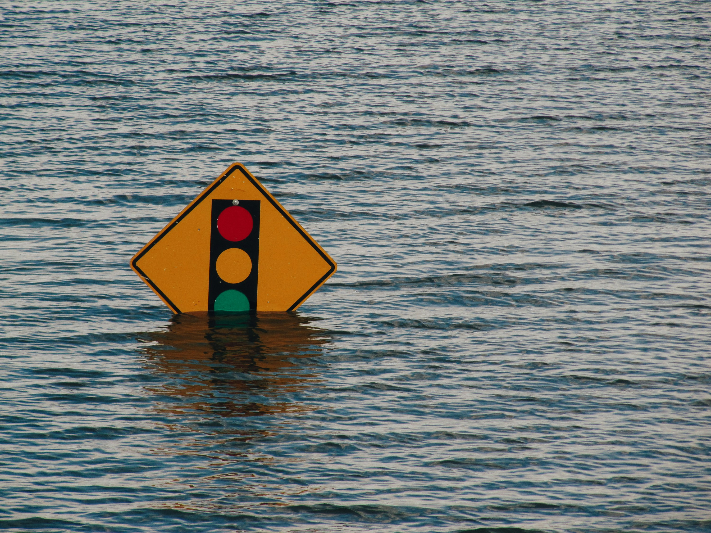

BloomViTech
SlideShow
Quiz
Formulário
Claro
Escuro
Verde

Quiz Interativo
1. O que é uma enchente?
Acúmulo momentâneo das águas da chuva em áreas urbanas.
Transbordamento da água dos rios.
Aumento do nível da água devido ao aquecimento global.
2. Qual fator contribui para o aumento das enchentes?
Desmatamento das matas ciliares.
Construção de áreas permeáveis.
Aumento da vegetação urbana.
3. O que é assoreamento?
Acúmulo de sedimentos no leito dos rios.
Aumento do nível do mar.
Construção de barragens.
4. Qual medida ajuda a prevenir enchentes?
Construção de mais ruas asfaltadas.
Descarte adequado de resíduos sólidos.
Cobertura de rios e córregos com concreto.
5. O que é impermeabilização do solo?
Aumento da vegetação.
Construção de superfícies que impedem a infiltração da água.
Aumento da área de drenagem.
6. O que é drenagem urbana?
Sistema de escoamento das águas pluviais.
Sistema de tratamento de esgoto.
Sistema de abastecimento de água.
7. O que é enchente urbana?
Enchente em áreas rurais.
Enchente causada por transbordamento de rios.
Enchente em áreas urbanas devido à impermeabilização do solo.
8. Qual é a principal causa das enchentes nas cidades?
Chuvas intensas.
Desmatamento.
Impermeabilização do solo.
9. O que é impermeabilização do solo?
Aumento da vegetação.
Construção de superfícies que impedem a infiltração da água.
Aumento da área de drenagem.
10. O que é drenagem urbana?
Sistema de escoamento das águas pluviais.
Sistema de tratamento de esgoto.
Sistema de abastecimento de água.
Enviar Respostas
Formulário de Contato
Nome:
E-mail:
Mensagem:
Enviar